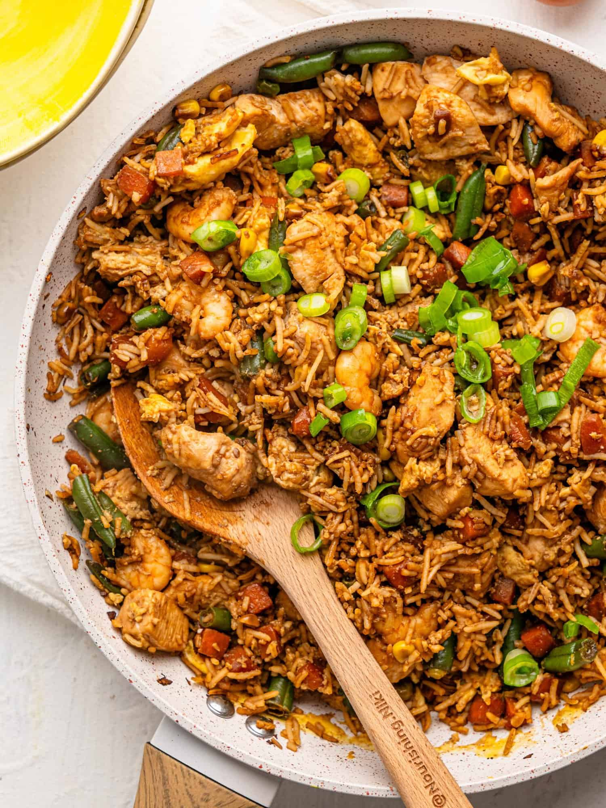

Fried Rice

Description
Ingredients
- rice cooked
- vegetarian chicken - chopped
- peas
- garlic - crushed
- chillies - finely cut
- shallots - finely cut
- carrots - chopped
- spring onions - sliced
- egg
- oyster sauce
- fish sauce
Steps
- add the sjalots, chillies and garlic to a hot pan on high fire
- fry untill the sjalots are starting to brown just a little bit
- add the vegetarian chicken and fry untill brown
- now add the carrots and fry for just a couple of minutes
- add the rice and fry for a bit
- slide the rice to the side of the pan and add the eggs, baking them
- once done, stir them in with the rice and add the peas
- leave on the fire for a couple of mintes while continously stirring
- now add the oyster sauce and fish sauce and the spring onions
- again fry for a couple of minutes
- serve with lime wedges
Home